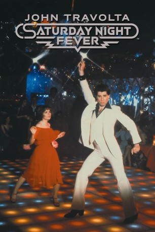

#5998 Saturday Night Fever - Nur Samstag Nacht
Alternativ: Saturday Night Fever
Auszeichnungen: für 1 Oscars nominiert
 
 IMDB-Wertung: 6.8 / 10
IMDB-Wertung: 6.8 / 10  Metascore: 0
Metascore: 0 
Tony Manero arbeitet wochentags in einem Geschäft in Brooklyn. Aber samstagnachts verwandelt er sich in den unangefochtenen König der Tanzfläche. Perfekt ausstaffiert mit Schlaghosen, Plateauschuhen und hautengem Hemd, macht er sich auf den Weg zu dem Ort, an dem er nicht einer von vielen, sondern fast schon ein Gott ist. Aber am Rande des Trubels, abseits der Discolichter in der Dunkelheit, spielt sich eine andere Geschichte ab, die von Desillusionierung, Gewalt und tragischer Liebe...
Jahr: 1977
Dauer: 119 Minuten
FSK: 12
Land: USA Studio: Paramount PicturesTonspuren: DD5.1 - ,
Untertitel:
Auflösung: 1080p (1920x1080) Größe: 10240 MB
Genre: Drama, Musik
Regisseur: John Badham
Drehbuch: Winston Groom
Soundtrack:
Darsteller:
 John Travolta als Tony Manero
John Travolta als Tony Manero- Karen Lynn Gorney als Stephanie
- Barry Miller als Bobby C.
- Joseph Cali als Joey
 Paul Pape als Double J.
Paul Pape als Double J.- Donna Pescow als Annette
- Julie Bovasso als Flo
 Sam Coppola als Dan Fusco
Sam Coppola als Dan Fusco- Denny Dillon als Doreen
 Robert Costanzo als Paint Store Customer
Robert Costanzo als Paint Store Customer Fran Drescher als Connie
Fran Drescher als Connie- William Andrews als Detective
- Ann Travolta als Pizza Girl
- Val Bisoglio als Frank Sr.
- John Badham als Pedestrian #1 , uncredited
 David Daniel als Dancer , uncredited
David Daniel als Dancer , uncredited Adrienne King als Dancer , uncredited
Adrienne King als Dancer , uncredited Antone Pagán als Dancer , uncredited
Antone Pagán als Dancer , uncredited Alberto Vazquez als Gang Member , uncredited
Alberto Vazquez als Gang Member , uncredited- Bruce Ornstein als Gus
- Martin Shakar als Frank Jr.
- Nina Hansen als Grandmother
- Lisa Peluso als Linda
- Bert Michaels als Pete
- Robert Weil als Becker
- Shelly Batt als Girl in Disco
- Donald Gantry als Jay Langhart
- Murray Moston als Haberdashery Salesman
- Helen Travolta als Lady in Paint Store
- Ellen March als Bartender
- Monti Rock III als The Deejay
- Sandy Biano als Dancer , uncredited
- Roy Cheverie als The Wrong Partner , uncredited
- Randy Feelgood als Dancer , uncredited
- Adrienne Framet als Marie. Puerto Rico Dancer , uncredited
- Chere Mauldin als Dancer , uncredited
- Joseph Pugliese als Hector. Puerto Rico Dancer , uncredited
- M.J. Quinn als Dancer , uncredited
- John Sagona als Dancer , uncredited
- Frankie Verroca als Dancer , uncredited
Datei: X:\1977\Saturday Night Fever - Nur Samstag Nacht (1977, FSK12, 1920x1080).mkv seit 18.04.2017
Festplatte: HD 1971-1979
 Es gibt insgesamt 33 Filme in der Gruppe '1977'
Es gibt insgesamt 33 Filme in der Gruppe '1977'